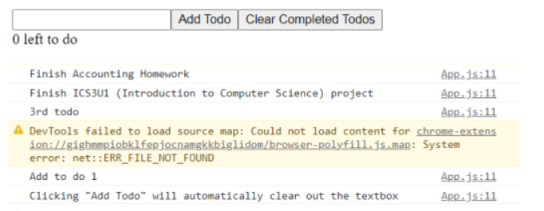

I completed half of the "Git and
GitHub for Beginners - Crash Course." From this, I learned the difference between Git and GitHub, along with
Git commands such as "git push", "git add", "git commit" and "git clone." Additionally, I learned the basic
terminologies used when working with Git and GitHub. As well, I learned about SSH keys and learned to generate my
own for my GitHub account. The only thing I would do differently is to clone with HTTPS rather than SSH.
(September 26, 2022)

I completed the other half of the
Crash Course.
This went smoother than yesterday as through research and trying out various cloning methods, HTTPS
was easier to clone with as it caused less errors compared to SSH. Once I finished the crash course. I watched a
YouTube video about GitHub pages and
how to host my own. I was successfully able to host my own website
as seen on the left. I have made some improvements to the website and I am currently working on pushing it out and updating
it.
(September 27, 2022)

I followed along a
React Tutorial.
This tutorial does not cover the complex concepts of React but does cover the basics of React. I did not get to finish the
tutorial, however, I did follow alongside. The tutorial demonstrated how to create a To-Do List using React as well as using
npm and npx commands. The photo on the left shows a To-Do List that displays tasks in the console that the user typed into
the textbox. As well, I successfully changed my default website page from my README.md file to
Home.
(September 28, 2022)

I developed a clicking app, or a simpler version of Cookie Clicker through a
Crash Course.
This tutorial involves the uses of "Props" and "Hooks" such as "useStates." This clicking app does not only let to add by one,
but allows you to subtract by one as well. After finishing this tutorial, I gained a better understanding of React's format.
To further familiarize myself with React, I started another tutorial,
"React Tutorial For Beginners"
which puts more emphasis on the concepts and structures.
(September 29, 2022)

I began the process of rewriting my website using React. During this process, I created a component folder under my src folder
which included Javascript contents for the header and body of the website. The React website to the left is identical to the website from
September 27, 2022 (Hosting a Website). The only difference is that this websites navigation bar is still in the works and the "styles"
for the Internship-Logs content needs to be converted into React format. I am working to solve these issues to create an exact replica.
(September 30, 2022)
I started off the day of picking it up from where I left off. I successfully converted all of my Internship-Logs content into React format.
As well I spent some time trying to resolve issues relating to React Routers and Switches. Unfortunately, I had no success but I got a lead from my
mentor. Soon after, I had a meeting with my mentor to which he taught me windows shortcuts, which are essential to becoming a great software engineer.
From this, I was able to navigate around my computer more effectively and efficiently without a mouse. Click image for
Shortcuts Text File.
(October 3, 2022)

I found a solution to the Switch error I had mentioned previously. Through research, I learned that Routes served the same purpose as Switch.
After trial and error, I was successfully able to replace the use of Switches with Routes by importing Routes from 'react-router-dom'. Additionally, I researched Route Paths to which
I learned the concept of capitalizing the first letter when assigning the JavaScript file to an element; capitalizing the first letter would render the
JavaScript file individually.
(October 4, 2022)

My mentor advised me to take notice of processes I find myself constantly doing that take up time to-which I could have spent being more productive such as coding,
debugging, researching etc… To my surprise, I found myself constantly using the same inline styling for my internship logs. This essentially led me to
create CSS classes which I could reuse for future logs. As well, I figured out a solution to my text alignment and font size errors which originated
from incorrect slash placements in tags when converting HTML to JSX.
(October 6, 2022)